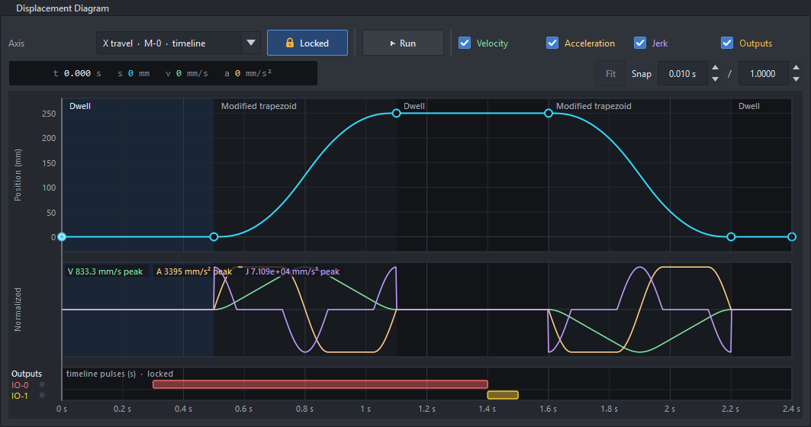
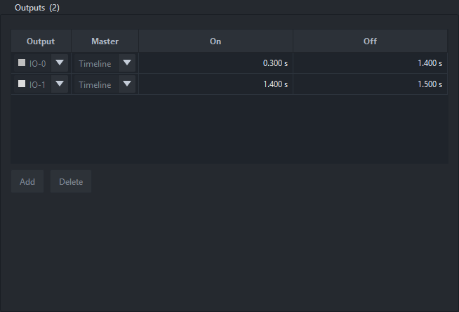

The project switches the ClearCore's outputs IO-0..IO-5 with pulses, like the cam switches of a mechanical machine: a saw motor, a clamp, a glue gun, a vacuum valve. Outputs belong to the whole project, and each pulse picks its master:
Up to 32 pulses (at least 0.1° or 1 ms each). Every output is off when its master is not running: idle, armed, done, after Stop, Abort, a fault or the estop.
At the bottom of the Displacement Diagram, one lane for each output the project uses (an output with at least one pulse); with none, no band. Each lane shows the pulses on the selected axis's master (crank pulses on a crank axis, timeline pulses on a timeline axis; the other master's pulses are counted, greyed). A new output starts on the Outputs page.

A pick-and-place timeline: the X axis's move, with the gripper (IO-0) and vacuum (IO-1) pulses in the band.

The Outputs page: each pulse as a row of output, master, on and off.
Every pulse as a table (output, master, on, off) to type exact values. Add puts a pulse at the cursor on the selected axis's master, on the first output not yet used; the Output column moves it to another. Changing a pulse's master converts it at the expected crank speed.
An IO pin is an output or the trigger, not both. The timeline's trigger input (Timeline page) can't be an IO pin the outputs use: the trigger list greys those pins, the Output column greys the trigger's, and a project that has both on one pin gets an error in the review (the board refuses to load it).
Simulate does not switch the pins. The board still runs and reports the outputs (the status line and the lamps), so a simulation never fires a real actuator.